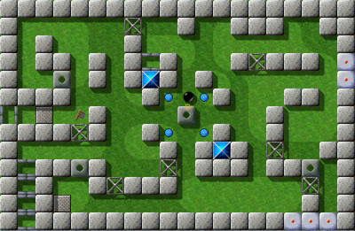
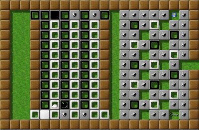

Ergebnisse der allgemeinen FragenUm die Spannung aufrecht zu erhalten, beginnen wir mit den allgemeineren Statistiken: Insgesamt haben wir 741 Klicks registriert, 73 Nutzer und bis zu 40 Antworten pro Frage, was uns einen breiten Einblick darin gibt, wir unsere professionellen Spieler spielen. Und: Etwas mehr als die Hälfte aller Spieler nutzten den deutschsprachigen Fragebogen. Die meisten (42%) stießen zu Enigma während Version 0.8x. Ich erinnere mich, dass ich einer von ihnen war, ich fand Enigma als Paket für SuSE, surfte durchs Netz und sah, dass Enigma 0.92 bereits draußen war. Eine bemerkenswerte Mehrheit von 69% aller Spieler benutzen Windows 2000 oder XP, oft zusammen mit einem Linux. Die bevorzugten Linux Versionen sind Debian und Ubuntu. Ein weiterer faszinierender Aspekt ist, dass etwa doppelt so viele Spieler Windows 95/98 oder ME verwenden (6 von 39) als Vista (3 von 39). 3 von 39 Spielern nutzen Mac OS („Tiger“ 1 zu „Panther“ 2). Ein Spieler nutzt (zusätzlich zu einem Windows) ein komplett anderes Betriebssystem, und ich frage mich nach wie vor, welches System das sein mag … Schließlich benutzen 2 von 39 einen Dualcore und einer nutzt einen gp2x. Die Benutzungsquote von 95/98/ME und Panther zeigt uns, dass wir Enigma auf Geschwindigkeit optimieren müssen, damit es auch auf Rechnern noch weich läuft, die bereits ein paar Jahre alt sind, und dass wir die Unterstützung für diese Systeme auch in den nächsten Releases beibehalten sollten. Eine ziemlich polarisierende Frage zielte auf den Schwierigkeitsgrad der Levels ab. Wir bekamen 37 Antworten zu dieser Frage, und etwa die Hälfte (16) findet, dass der Schwierigkeitsgrad richtig ist, so wie er ist. Jedoch möchten 9 die Levels lieber einfacher haben, und 3 Spieler lieber schwerer. Die Streuung der Schwierigkeit ist umstritten - 8 wünschen sich eine kleinere Streuung, 6 hätten gerne eine größere. Als nächstes fragten wir nach der bevorzugten Levelart, und hier findet unsere Gemeinschaft eine gemeinsame Basis: Große Mehrheiten (über 50%) bevorzugen kleine, schnell spielbare Rätsellevel und Levels zum Erforschen neuer Kombinationen und neuer Spielobjekte. Etwa 38% mögen große Abenteuerlevel, und nur eine Minderheit von 14% würde gerne mehr Geschicklichkeits-Levels sehen, oder große, schwere Rätsel. 32% hätten gerne mehr Levels von „anderem Typ“, und leider bin ich unsicher, welche Arten das noch sein mögen. Ich bin überrascht (und persönlich auch glücklich) über dieses Ergebnis. obwohl es zeigt, dass der „Level des Monats“ nicht unbedingt die beliebtesten Levels wiederspiegelt. Natürlich steht es allen Levelautoren nach wie vor frei, Landschaften nach ihrem Gusto zu programmieren - jedoch, in Zweifelsfällen, mögen diese Zahlen vielleicht einen Hinweis geben. Die meisten Spieler (über 76%) versuchten mindestens die Hälfte aller Levels ernsthaft zu lösen, unabhängig vom Typ! Das ist eine sehr wichtige Zahl für uns, da sie helfen kann, die PAR-Werte zu eichen und die Bewertungen besser zu verstehen. Wir alle kennen die Wichtigkeit des mag-heut.net-Forums für Enigmas Gemeinschaft. Dies wird auch reflektiert von den Antworten auf unsere nächste Frage nach der Wichtigkeit der verschiedenen Informationskanäle: Von 1 bis 5 Punkten, erreichte das Forum einen Schnitt von 4,10, die Homepage folgt mit 4,06. Die anderen Kanäle sind von weit geringerer Bedeutung: die Entwickler-Mailing-Liste (2,86), private Kommunikation (2,75), weiteres (2,4), die Ankündigungs-Mailing-Liste (2,14) und die Yahoo Oxyd-Gruppe (1,58). Dies bestätigte unsere Vermutungen. Wir haben Sie auch nach Ihrer Meinung über die weitere Entwicklung von Enigma gefragt, und gebeten, die verschiedenen Arbeitsgebiete zu bewerten. Das Ergebnis ist sehr schwierig auszuwerten, insbesondere da 9 von 34 Antworten nicht alle Arbeitsgebiete enthalten - aber als wesentliches Resultat, sollten neue Levels die höchste Priorität haben, gefolgt von einem Leveleditor, neuen Objekten (wir erinnern uns daran, dass viele Spieler gerne mehr Levels zum Erforschen neuer Spielobjekte und Features sehen würden), sowie Fehlerbehebung. Von mittlerer Priorität sind der Zweispielermodus (via Netz), Hintergrundinformationen (einschließlich dem LdM) und ein System zum Abspeichern während der Erforschung. Weiter hinten finden wir den Wunsch nach neuen Grafiken und Sounds, nach Turnieren und Portierungen von Enigma auf andere Plattformen. Sicher, es ist schwierig, allen Gebieten Prioritäten zuzuordnen, die man gerne hätte - wie auch immer, ich finde diese Bewertung durchaus interessant, obwohl sie nur einen geringen Einfluss auf unsere kurzfristigen Pläne ausüben wird. Wir haben auch viele nette und ermunternde Kommentare bekommen, vielen Dank an alle dafür! :-) „Es sind wirklich die Levels, die uns belohnen, nicht anders herum“Hier nun ein ganz besonderer Kommentar:
Enigma 0.22 wurde am 30. Dezember 2001 fertig: Es war ein kleiner Schnappschuss
aus der Entwicklung, den ich als Backup gemacht hatte, fast drei Monate vor dem
ersten öffentlichen Release. Der Hauptgrund, aus dem Enigma 0.22 niemals
meine Festplatte verlassen hat, war, dass es noch nichts zu Spielen gab: Ich
hatte noch nicht mal angefangen, die schwarze Murmel und ihre Interaktion mit
den anderen Spielobjekten zu programmieren. Aber die Grafik für einige
Spielobjekte wie Dynamit, Bomben und den Regenschirm war bereits fertig (und hat
sich seit damals nicht wesentlich verändert), und es gab einen einzelnen
„Level“, den ich zu Testzwecken geschrieben hatte, Nun, hier ist er,
der Level des Jahres 2001:

Level of the Year 2001
Für den technisch interessierten Leser ist hier der Quellcode
dieses ersten Levels:
(o2-create-world „Test Level“ 40 40)
(draw-stones „st-brownie“ 5 5 1 1 5)
(draw-stones „st-brownie“ 11 11 1 -1 5)
(draw-stones „st-brownie“ 2 6 1 -1 5)
(draw-items „it-umbrella“ 3 3 1 0 10)
(set-item „it-document“ '(10 4) 'text „There's treasure everywhere“)
(fill-floor „fl-sand“ 0 0 40 40)
(fill-floor „fl-rock“ 5 5 8 8)
(o2-set-actor 12 5 (o2-make-object „ac-blackball“))
(set-stone „st-grate1“
(list 15 5
10 10
10 11
10 12))
Heute, fast sechs Jahre später, ist es nicht ganz so einfach, einen Level
des Jahres zu wählen. Seit Enigmas bescheidenen Anfängen 2001 wurde
die Zahl der Levels auf über 1000 katapultiert, und allein nur die
Hälfte von ihnen zu lösen, nötigt einem viel Hingabe zum Spiel
ab. Dass es einige Spieler trotzdem geschafft haben, mehr als 90% aller Levels
zu lösen, ist dementsprechend umso beeindruckender! Und es erscheint
unwahrscheinlich, dass sich dies in Zukunft ändern wird: Wenn die
vergangenen sechs Jahre auf die Zukunft übertragen werden dürfen,
werden Enigmas Fans mindestens alle zwei Tage einen Level lösen
müssen, nur um mit dem Ansturm neuer Levels mitzuhalten …
Die Levels, die den diesjährigen Wettbewerb gewonnen haben, sind ganz klar
einige der feinsten Landschaften, die es zur Zeit für Enigma gibt.
Rätsel im „Finde den richtigen Schlüssel“-Sinn sind in
„modernen“ 3D-Spielen allgegenwärtig, aber der Beste Onescreener
zeigt, wie's richtig geht. Die Beste Levelserie enthält zwei Levels, die
unter den ersten Landschaften waren, die direkt die Aufmerksamkeit des Spielers
weckten, ihn verhöhnen und herausfordern, was noch immer eine einzigartige
Spielerfahrung kreiert. Der Sieger in der Kategorie „Bestes Design“
geht sogar noch weiter: Die Kombination einer fast epischen Geschichte von
Mysterium und Abenteuer, haarsträubende Rätsel und eine wundervolles
visuelles Design machen diesen Level zu einem der herausfordernsten und
lohnenswertesten in Enigma aller Zeiten. Die beiden Lustigsten Level sind
wahrhaft originell in der Art, wie sie die Idee der Meditations-Landschaften auf
den Kopf stellen, und der Beste Yin-Yang-Level ist ein alter Freund: Er war
unter den ersten Levels, die die Yin-Yang-Objekte verwendeten, und bleibt bis
heute einer der besten.
Schließlich geht der Preis des „Levels des Jahres 2007“ an eine
Landschaft, die in ihrer Beliebtheit bislang unerreicht ist, und von einem von
Enigmas Meisterleveldesignern geschrieben wurde. Sein sich lang erstreckender
Irrgarten, angefüllt mit Rätseln, Überraschungen und Gefahren,
und ihn zu lösen, sollen definit auf Ihrer Liste guter Vorsätze
für das neue Jahr stehen, wenn er das noch nicht ist …
Der Preis zum „Level des Jahres“ ist der erste seiner Art, und ich
hoffe wahrhaft, dass er zu einer Tradition der kleinen, aber lebhaften Enigma
Gemeinschaft wird. Die Kreativität von Enigmas Leveldesignern
verblüfft mich weiterhin, und ich denke, das das sie der wahre Grund
für den Erfolg des Spiels und seinen lange wirkenden Charme ist. Und,
schließlich, um uns selbst nicht zu täuschen: Es sind wirklich die
Levels, die uns belohnen, nicht anders herum.
Und hier sind sie: Bester Onescreener 2007: „Doors Galore“ von Ray Wick
„Doors Galore“ ist einer der überraschendsten und „oxydischsten“ Levels in Enigma, verwendet dabei nur Standardobjekte auf neue und faszinierende Weise. Mit 3,89 von 5 möglichen Punkten hat Ray Wick einen bemerkenswerten Vorsprung vor „Plan Ahead“ (3,59) und „Industrial Puzzles“ (3,50). Beste Levelserie 2007: „Gods of Enigma“ von moonpearl Gods of Enigma, V/67 
Gods of Enigma II, V/69
Die „Gods of Enigma“-Levelserie von moonpearl erreichte Enigma über das mag-heut.net-Forum und zog aus, die Herzen der Enigmaspieler zu erobern - und war absolut erfolgreich: Mit der höchsten Wertung aller Levels quer durch alle fünf Kategorien, 4,23 Punkten, übertrafen die „Gods of Enigma“ sogar die enorm hohen Ergebnisse von „Little Puzzles & Big Adventures“ (4,03) und den „Seed Puzzles“ (3,70).
Bestes Design 2007: „The Aztec Temple“ von Dominik Lehmann
Der Designpreis wurde unter drei Giganten ausgemacht: Dennoch hat der Level des Monats Mai 2007, „The Aztec Temple“, mit 4,19 Punkten „Mountain Climbing“ (3,80) und „Solar System“ (3,68) in den Schatten gestellt, und eine völlig neue Umgebung für Enigmas Levels etabliert: Neben Raumschiffen, Wäldern, Städten und dunklen Gassen, wird von nun an der Dschungel ein neues mögliches Setting für unsere Levelautoren sein. Lustigste Levels 2007: „Advancing“ und „Mountain Climbing“ von Joseph Dunne

Mountain Climbing, VII/22
Joseph Dunne schaffte einen Doppelschlag: Seine grandiosen Levels „Advancing“ und „Mountain Climbing“ erreichten beide 3,786 von 5 Punkten, und demonstrierten, was Enigma auch sein kann: Das einzigartige Design seiner Levels spiegelt die Leichtigkeit ihrer Spielatmosphären wieder, eingerahmt von nicht ganz so leichten Rätseln. Er hat damit sogar „Diving“ (3,55) und „What's the Problem?“ (3,52) ausgestochen.
Bester Yin-Yang-Level 2007: „Teamwork“ von Jacob Scott Teamwork, III/18 „Teamwork“ ist die treffendste Bezeichnung für den besten Yin-Yang-Level in Enigma: Jacob zeigt mit diesem klassischen Level, was Zusammenarbeit wirklich bedeutet, und mit 3,83 Punkten zeigt „Teamwork“ noch Respekt vor seinen Kameraden „Turnstiles for Two“ (3,75) und „Manamana“ (3,64). Und nun, die wichtigste Kategorie: Level des Jahres 2007: „Island Labyrinth“ von Jacob Scott!
Zum Ende ist es doch nochmal spannend geworden, da gleich vier Levels einen großen Sprung nach oben gemacht haben, um Level des Jahres 2007 zu werden: „Quadropolis“ und „Temple of Gold“ haben beide „The Aztec Temple“ überholt, und Houdini ließ „Labyrinth of Puzzles“, „The Aztec Temple“ und sogar „Temple of Gold“ hinter sich - fünf Levels zwischen 9.10 und 9.25 Punkten! Aber am Ende konnte keiner von ihnen „Island Labyrinth“ das Wasser reichen: 5 seiner 8 Wertungen sind volle 10 Punkte, eine 9, eine 8 und eine 7 füllen die Wertung auf, was Jacob Scott als unbestrittenden Levelautor des Jahres 2007 bestätigt! Wir kommen zum Ende …Diese erste Runde unserer Level-des-Monats-Serie endet nun amüsanterweise, wie sie im März 2007 begonnen hat: mit „Island Labyrinth“. Sie können seinen Artikel hier nochmal nachlesen. Und an dieser Stelle wird es Zeit, dass wir uns bei all den Leuten bedanken, die uns über das letzte Jahr geholfen haben, unsere Artikel zu schreiben: Zuerst mal jenen, die einen Kommentar beigetragen haben, an Alejandro Lacava, Ronald Lamprecht, Andreas Geldmacher, Hubai András, Tarim, Raoul Bourquin, illmind, Manfredi Carta, Manuel König, Linda Mihalic, Mark Pulley, Lukas Schüller, Shoki, Spioni, Craven, und Daniel Heck. Größter Dank geht an Taztunes, der die englische Version jeden einzelnen Artikels korrekturgelesen hat, und uns mit sage und schreibe fünf Kommentaren ausgeholfen hat! Er war immer da, wenn wir einen weiteren Beitrag brauchten, und immer pünktlich. Großer Dank geht auch an Yuriy, der die Mühe auf sich nimmt, jeden unserer Artikel für unsere russischen Freunde ins Russische zu übersetzen, oft innerhalb von nur 24 Stunden, und an Joe, der der federführende Autor des Juli-Artikels war. Vielen Dank an Euch alle! Wir wollen auch unseren Levelautoren danken, die die großartigen zehn Levels geschrieben haben, über die wir während des letzten Jahres berichten durften, und die ebenfalls Kommentare für unsere Artikel beigesteuert haben: Vielen Dank Jacob Scott, Manuel König, Dominik Lehmann, Ronald Lamprecht, Barry and Lori Mead, Johannes Laire, Raoul Bourquin, und Jon 'WB' Sneyers. Und Dank geht an den Gründer des Enigma-Projektes, an Daniel Heck, ebenso wie an Meinolf Schneider, der Esprit und Oxyd geschaffen hat, unsere steten Inspirationen. Sie können die aktuellen Statistiken unserer zehn LdMs im LdM-Archiv finden, und die genauen statistischen Ergebnisse der Abstimmung finden Sie hier. Frohes Neues Level-Jahr, |

 Doors Galore, IV/9
Doors Galore, IV/9
 The Aztec Temple, VI/100
The Aztec Temple, VI/100 Advancing, VII/23
Advancing, VII/23 Island Labyrinth, V/100
Island Labyrinth, V/100